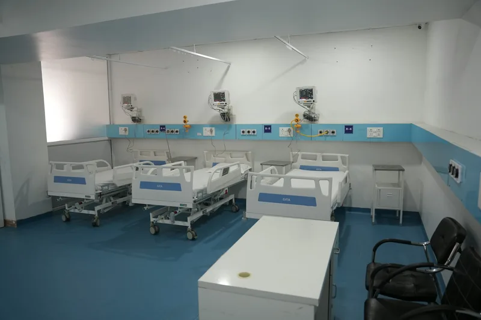
Treatment bays
Reclining beds and chairs with their own screen, reading light and call button, spaced for privacy.
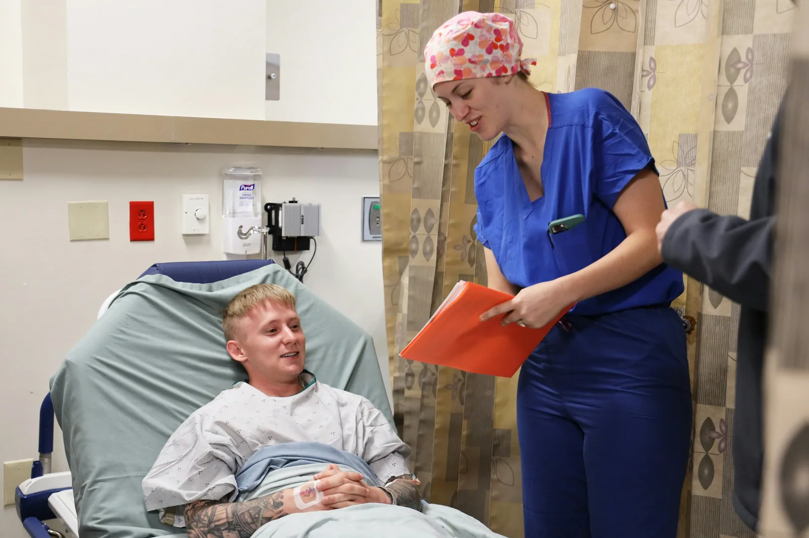
Dialysis care in Chennai and Bengaluru
In-centre, home and overnight dialysis with nephrologists and nurses who know you by name. Calm rooms, clear plans and time to talk.
Our facilities
You may spend twelve hours a week with us, so every room is built for rest, privacy and safety.

Reclining beds and chairs with their own screen, reading light and call button, spaced for privacy.
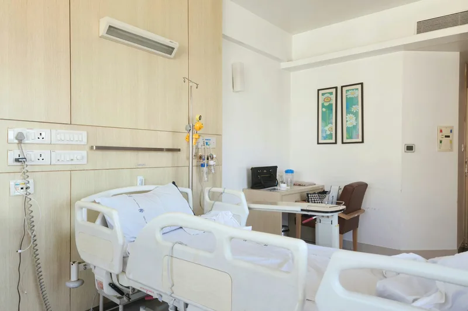
Quiet single rooms for nocturnal dialysis, isolation needs or anyone who simply prefers their own space.
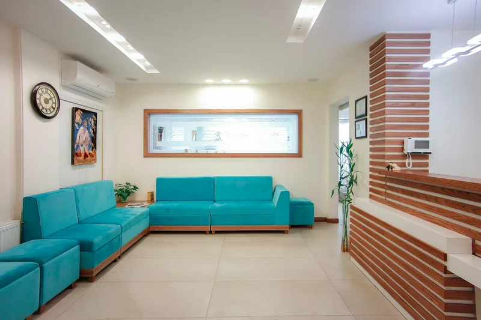
A calm place for companions to wait, with tea, Wi-Fi and a view of the garden.
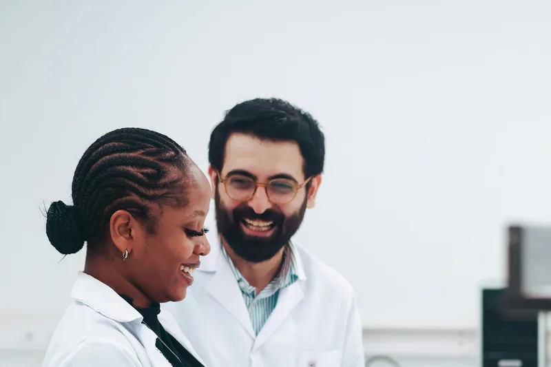
Dialysis water is purified on site and tested every day, well beyond national standards.
Treatments
We help you choose the treatment that fits your health, your home and your week.
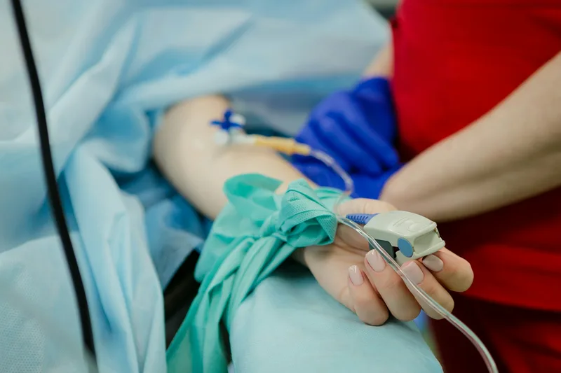
Three calm sessions a week in a bright bay, with a nurse always within sight.
Learn about haemodialysis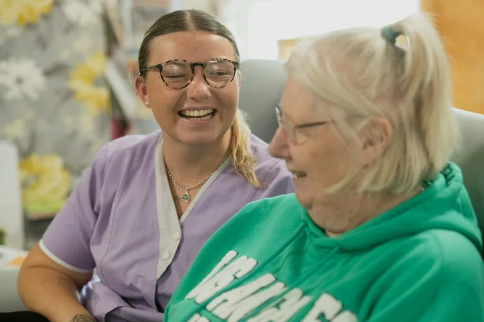
Dialysis on your own timetable, with training and a 24/7 helpline behind you.
Learn about home dialysis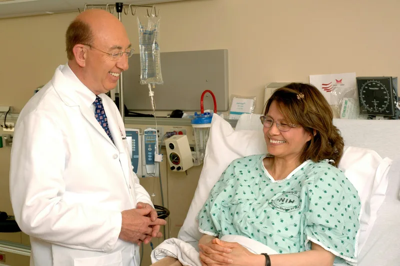
Needle-free dialysis using the lining of your own tummy, done at home.
Learn about peritoneal dialysis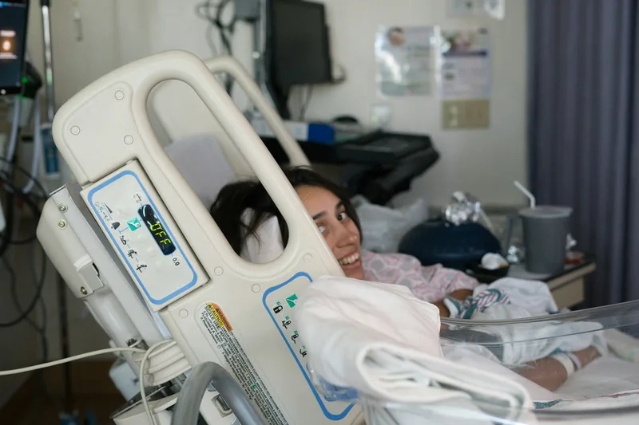
Longer, gentler dialysis while you sleep, so your days stay your own.
Learn about nocturnal dialysisWhy Tidewell
We track the numbers that matter to your health and the small things that matter to you: a warm blanket, the same nurse, a session that starts on time.
Your care team
Every patient has a named doctor, a primary nurse and easy access to our specialists.
Patient stories
Patients and families on what dialysis at Tidewell feels like week to week.
I was frightened before my first session. Anita sat with me, explained every beep, and three years later I still look forward to our chats on Monday mornings.
Peritoneal dialysis gave me my mornings back. The nurses trained me patiently, and someone always answers the helpline, even at midnight.
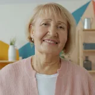
Margaret D'CruzPD patient, BengaluruMoving to nocturnal sessions changed everything. I sleep through dialysis, have more energy and finally have time for my grandchildren again.
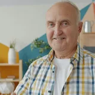
George AbrahamNocturnal patient, ChennaiNot sure where to start?
Book a free 30-minute visit: see the unit, meet a nurse and ask anything. Families are always welcome.